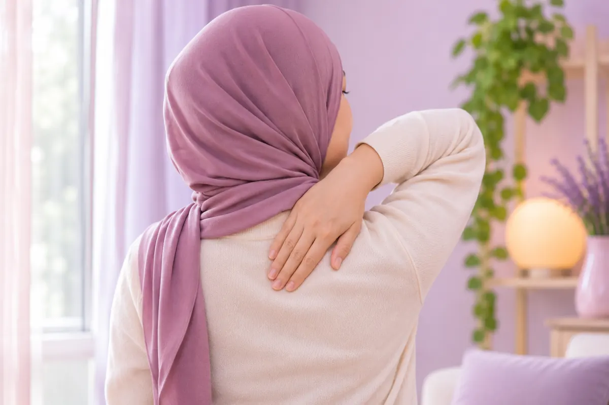

Punggung
17 kondisi dan gejala
 Kanker menyebar ke tulang belakang (metastasis spinal)
Kanker menyebar ke tulang belakang (metastasis spinal) Keringat berlebih di punggung
Keringat berlebih di punggung Malformasi pembuluh darah sumsum tulang belakang
Malformasi pembuluh darah sumsum tulang belakang- Mielitis (radang sumsum tulang belakang)
 Miofasiitis punggung atas (nyeri otot dan fasia)
Miofasiitis punggung atas (nyeri otot dan fasia) Patah tulang belakang
Patah tulang belakang Penyakit tulang belakang dada (spondilosis torakal)
Penyakit tulang belakang dada (spondilosis torakal)- Sindrom tethered cord
- Siringomielia
 Skoliosis tulang belakang dada
Skoliosis tulang belakang dada- Spina bifida tersembunyi (spina bifida okulta)
- Spondilitis (radang tulang belakang)
- Spondilitis ankilosa
- Stenosis spinal torakal
 TBC tulang belakang (penyakit Pott)
TBC tulang belakang (penyakit Pott)- Tulang belakang bengkok (skoliosis)
 Tumor tulang belakang
Tumor tulang belakang